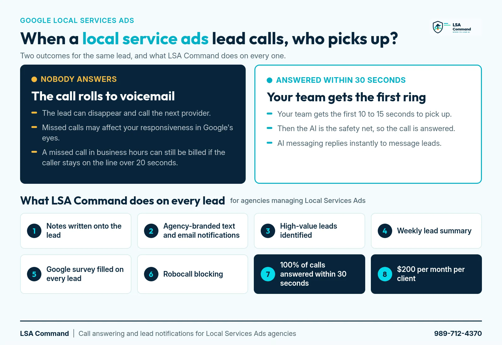
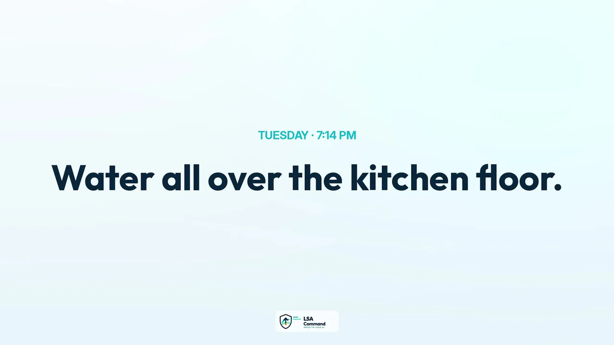
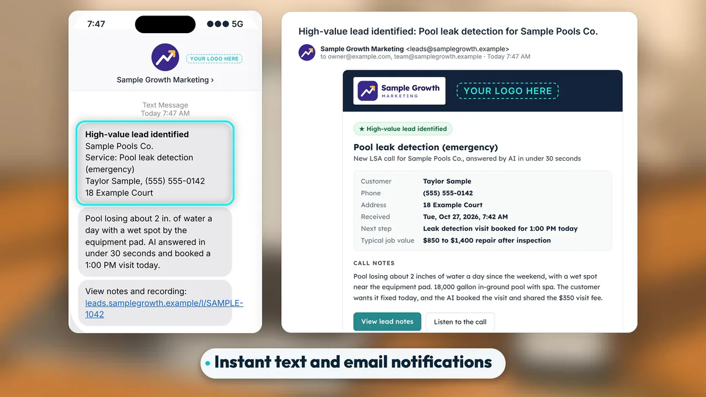
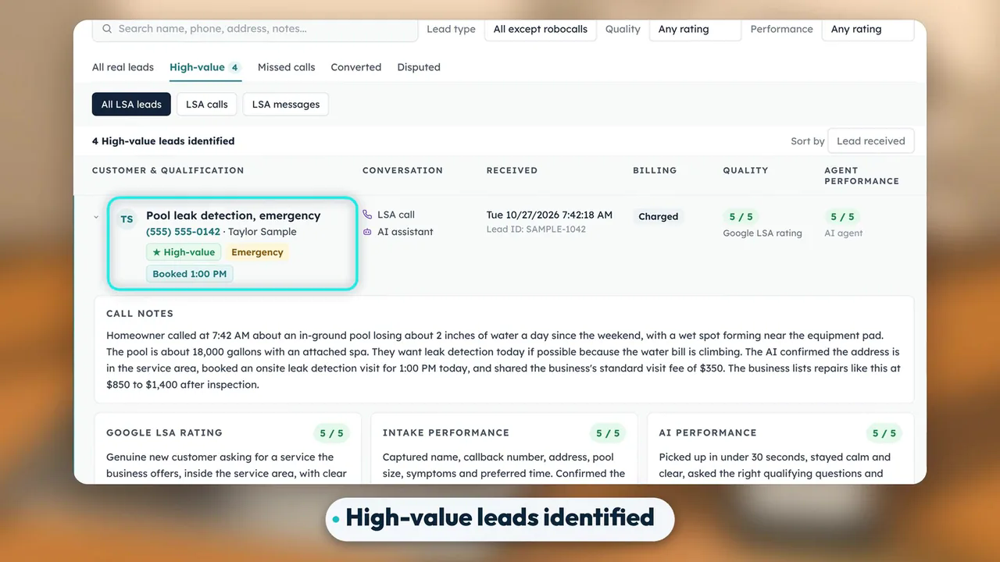
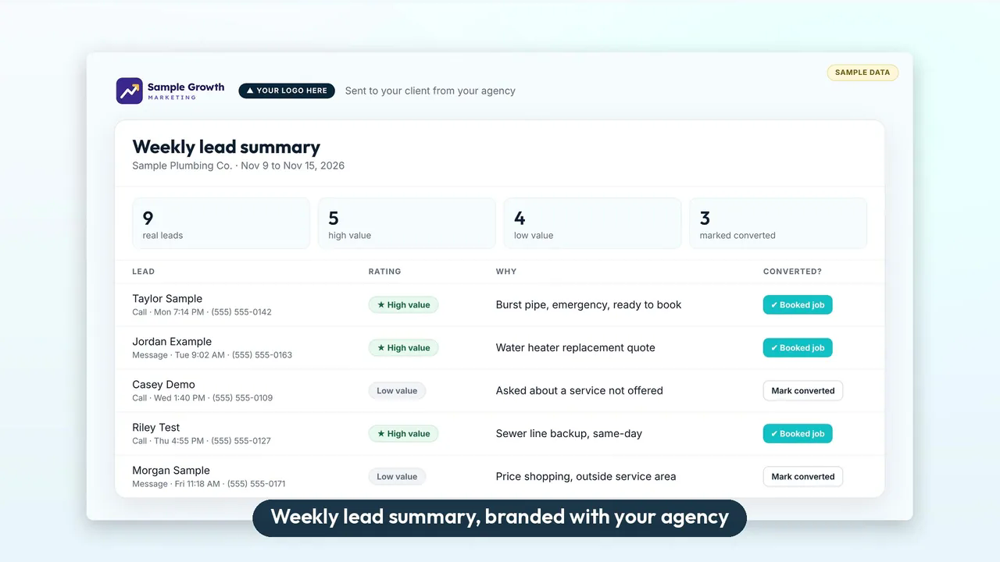
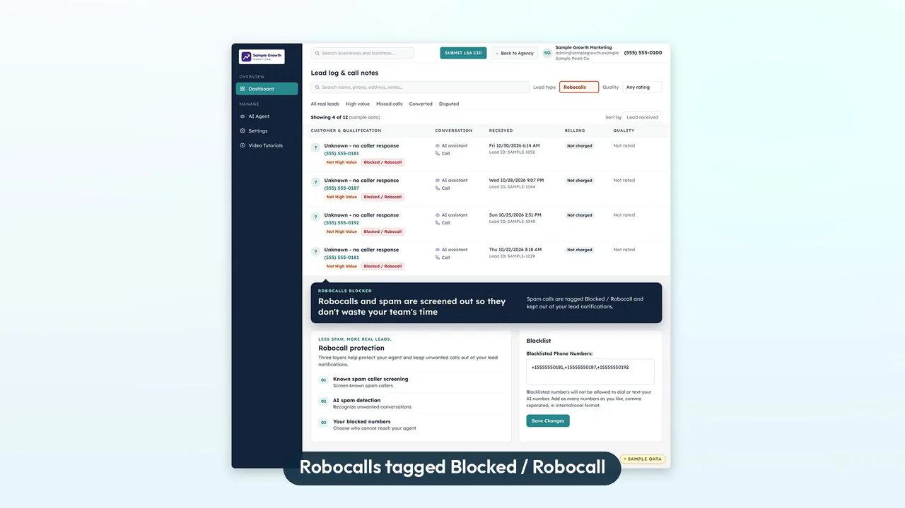

Short answer: the call can go to voicemail, the caller may hang up and tap the next ad, Google can still bill the lead if the caller stayed on the line more than 20 seconds during business hours, and Google says missed calls may negatively affect your responsiveness.
There are two ways a call from your client's local service ads can go. In one, the phone rings five times, hits voicemail, and the customer taps the next ad. In the other, 100% of calls are answered within 30 seconds, and AI messaging replies to message leads instantly.
Quick definition first. Local service ads (Google's official name is Local Services Ads, or LSAs) are pay-per-lead ads for local businesses such as plumbers, HVAC companies, and roofers. They show on Google Search and Maps with the Google Verified badge, and your client pays for leads, not clicks. That is why an unanswered call costs so much: the ad already did its job.
For the complete guide to how they work, what they cost, and how Google ranks them, read our local service ads guide.
This post is the written companion to the video below. It is for marketing agencies that run Google Local Services Ads for home service clients. LSA Command is built for agencies only. We don't sell to business owners directly. The post covers the basics in brief (how the ads work, what they cost, the badge, and ranking), then the eight points from the video on how LSA Command keeps a call your ads earned from quietly disappearing.

Key moments from the video
- 0:00 The call that disappears
- 0:47 What Google says about responsiveness
- 1:39 Every call answered, every message replied to
- 2:28 Notes written onto the lead inside Google LSA
- 3:35 Instant, agency-branded text and email notifications
- 4:26 High-value leads identified
- 4:58 The weekly lead summary
- 5:38 The Google survey, filled on every lead
- 6:20 Robocall blocking
- 6:48 Calls answered within 30 seconds, AI messaging replies instantly
- 7:55 Price and next step
Read the video transcript (lightly edited)
0:00 The call that disappears
It's seven fourteen on a Tuesday night. A homeowner has water spreading across her kitchen floor. She searches Google, taps the first Local Services Ad, and the phone rings. And rings. Five rings, then voicemail. She doesn't leave a message. She taps the next ad. That lead is gone. Your client's ads earned that call, and they may never even know it happened. Now picture the same call with LSA Command. One hundred percent of calls answered within 30 seconds. And AI messaging that replies to message leads instantly. In this video, we'll walk through what really happens after a customer calls, and how LSA Command makes sure no lead slips away, from the first ring to the weekly report.
0:47 What Google says about responsiveness
Let's start with what Google itself says. Google's help page on how Local Services Ads are ranked says ranking considers your responsiveness to customer inquiries. It says missed calls may negatively affect that responsiveness. And profile quality includes your average response time. So speed matters. Picking up matters. But your clients aren't sitting at a desk. They're on a roof. Under a sink. Driving between jobs. And Google's own lead notice is thin. For a phone lead, it's usually a basic notice. No summary, no transcript. So the lead comes in, and it just sits there. That gap is where great agencies pull ahead. Not with more ad spend, but with a better system around every single lead.
1:39 Every call answered, every message replied to
Here's how that system starts. When a customer calls, your client's team rings first. If nobody picks up, LSA Command's voice AI answers. So every call is answered within 30 seconds. No voicemail. The AI talks with the caller, finds out what they need, and gets the address. If the caller is ready, it can book the job, or warm transfer the call to the team. Message leads work the same way. When a customer sends a message through the ad, AI messaging replies instantly, right inside Google's LSA platform, and keeps the conversation going until the team has what it needs. Then everything the AI learns flows into the rest of the system. Let's go through it, piece by piece.
2:28 Notes written onto the lead inside Google LSA
Number one. Notes written onto the lead inside Google LSA. LSA Command writes a note right on the lead inside Google's LSA platform. What the customer needs, how serious they are, their phone number, and their address. Here's what that looks like on a lead. That note was written automatically. And here's the callback detail that matters. Google can pass along a forwarding number with an extension, and your client can't call that back. LSA Command replaces it with the caller's real number. The address is pulled from the conversation, and it goes into the Google LSA notes and into the notification. So when your client opens a lead, there's no guessing. They can call back, plan the route, and quote the job. And for you, every lead has a clean record. No more texting your client to ask if they ever reached Tuesday's caller.
3:35 Instant, agency-branded text and email notifications
Number two. Instant, agency-branded text and email notifications. The moment a lead comes in, LSA Command sends a notification by text, by email, or both. And it carries your agency's logo and your agency's name. Each one includes the caller's real number, the address, what they need, a short AI summary, and the full transcript. If it's a message lead that's still active, your client can tap in and take over the conversation. Every notification reminds your client who brought them that job. And spam gets filtered out before anything is sent. So when your name lights up your client's phone, it's worth picking up.
4:26 High-value leads identified
Number three. High-value leads identified. Every lead is rated, high value or low value, with the reason right next to it. An emergency leak that's ready to book today gets flagged. A price shopper asking about a service your client doesn't offer does not. You decide what high value means for each client, by service type and service area. The flag shows up on the notification and in the lead view, so your client knows exactly which call to return first.
4:58 The weekly lead summary
Number four. The weekly lead summary. Every week, your client gets a summary of their leads, branded with your agency's name. Each lead is rated high value or low value. Then your client can mark which leads turned into booked jobs. Once you know that, you can show return on investment. Not clicks. Not impressions. Real jobs tied to real leads. That changes the monthly call. You stop defending the budget and start showing results.
5:38 The Google survey, filled on every lead
Number five. The Google survey, filled on every lead. Google asks for feedback on each lead. It's how Google hears which leads were good and which were junk. But almost nobody fills it out. Your client won't, and your team doesn't have time to do it for every lead, for every client, every week. LSA Command fills out Google's survey on every lead, automatically, using the rules you set. Wrong number, spam, a service your client doesn't offer. It all gets reported. What Google does with that feedback is up to Google. But now it goes in on every single lead.
6:20 Robocall blocking
Number six. Robocall blocking. Junk callers waste your client's time and clutter their lead list. LSA Command screens calls at the carrier level, and the AI catches recorded messages and robotic voices that slip through. Blocked calls are tagged and logged in the dashboard, and they never trigger a notification to your client. So your client spends their day on real customers, not robots.
6:48 Calls answered within 30 seconds, AI messaging that replies instantly
Number seven. Back to that ringing phone. Calls answered within 30 seconds, and AI messaging that replies instantly. Here's a quick example of how the voice AI sounds when the team can't pick up.
AI: Thanks for calling Sample Plumbing. How can I help you today?
Caller: Hi, I've got water all over my kitchen floor. I think a pipe under the sink burst.
AI: I'm sorry to hear that. Let's get someone out to you. What's the address?
Caller: It's 123 Example Street.
AI: Got it, 123 Example Street. I've sent this to the team as an emergency, and they'll call you right back on this number.
Caller: Perfect. Thank you.
That's it. The caller is taken care of, and the team already has the address, the real callback number, and a note on the lead inside Google LSA. And it isn't meant to replace your client's team. They still get the first ring. The AI is the safety net, for after hours, for busy days, and for every moment when nobody else can answer.
7:55 Price and next step
So let's put it all together. Notes written onto the lead inside Google LSA. Instant, agency-branded text and email notifications. High-value leads identified. A weekly lead summary that rates every lead high or low value. The Google survey, filled on every lead. Robocall blocking. And calls answered within 30 seconds, with AI messaging that replies instantly. And number eight, the price. All of it is $200 per month per client, with voice AI included. It's not an add-on. And setup usually takes one call. If you run Local Services Ads for clients, call or text 989-712-4370. Again, that's 989-712-4370. Or visit lsacommand.com. Every call matters. Make sure every one of them gets answered.
What happens when a local service ads call goes unanswered
It is 7:14 on a Tuesday night. A homeowner has a leak in her kitchen. She searches, taps the first Local Services Ad she sees, and the phone rings five times. Then voicemail. She does not leave a message. She taps the next ad.

Your client's ads earned that call. The budget, the profile, and the reviews all did their job. And your client may never know it happened. There is no voicemail to return and nobody on the team to mention it. At the end of the month, you are the one explaining lead volume.
This is not a rare event. Invoca found that 27% of calls to home services businesses go unanswered. If you want to put a dollar figure on missed calls for a specific client, run their numbers through the LSA missed call calculator.
Local service ads in brief
Local Services Ads are Google's pay-per-lead ad format for local service businesses. A customer searches for a service, sees a short list of businesses, and contacts one straight from the ad by calling, sending a message, or requesting a booking. See Google's own overview of Local Services Ads.
Each ad is built from the business profile, not from ad copy you write. Google's help page on what the ads show lists the business name, a tracking phone number, reviews, hours, the Google Verified badge, photos, and a short bio.
Not every business can run them. Google limits Local Services Ads to certain business categories and locations, and each business has to pass Google's verification checks before the ads go live. Our guide on how to set up Google Local Services Ads walks through that process.
How Local Services Ads work
- A customer searches Google for a service in their area.
- Google shows Local Services Ads on Search and Maps. The order comes from an auction, covered in the ranking section below.
- The customer calls the tracking number on the ad or sends a message.
- The lead lands in the business's Local Services Ads lead inbox, and Google charges for it if it counts as a valid lead.
There are no keywords to pick. Google matches the ad to searches using the business profile, such as its services and service area. You control the profile, the budget, and the bidding. Google's page on how leads and budgets work has the details.
Step three is where this post lives. Everything before it is Google's job and yours. What happens after the phone rings is up to whoever picks up.
What Local Services Ads cost
You pay per lead, not per click. Google does not publish a price list. The cost of a lead varies by trade, market, job type, lead type, and bidding, so two clients in the same city can pay very different amounts. Our Google Local Services Ads cost guide covers how to work out what a specific client should expect.
One cost that catches agencies off guard: Google's page on how leads and budgets work says a missed call during business hours can be billed as a lead if the customer stays on the line for more than 20 seconds. So the real number to watch is not cost per lead. It is cost per answered lead. More on that in LSA missed call charges, and if a client is asking whether the spend pays off at all, see are Google Local Services Ads worth it.
The Google Verified badge (formerly Google Guaranteed)
The badge on Local Services Ads is now called Google Verified. In October 2025, Google consolidated Google Guaranteed, Google Screened, and License Verified into this one badge, and the money-back guarantee that came with Google Guaranteed ended. If a client still asks about "Google Guaranteed," that is the old name. The badge shows that the business passed Google's verification checks. It is not a guarantee of the work. Details are in our post on the Google Verified badge.
Local Services Ads vs Google Ads vs the local map pack
Clients mix these three up all the time. Here is the short version.
| Local Services Ads | Google Search ads | Local map pack | |
|---|---|---|---|
| What you pay for | Leads: calls, messages, bookings | Clicks | Nothing. These are organic listings |
| Targeting | No keywords. Google matches the profile to searches | Keywords and campaign settings you manage | No bidding. Driven by the Google Business Profile |
| What the customer does | Calls or messages straight from the ad | Usually clicks through to a website or landing page | Opens the Business Profile to call, get directions, or visit the site |
| Trust signal | Google Verified badge, plus rating and reviews | Your ad copy and landing page | Rating and reviews on the profile |
| If nobody answers | The lead can still be billed, and Google says missed calls may negatively affect your responsiveness | The click is already paid for | No charge, but the caller can move on to the next listing |
For a full breakdown of when to use each, see Local Services Ads vs Google Ads.
The move into Google Ads
Google is moving Local Services Ads into Google Ads, where they run as Performance Max campaigns with pay-per-lead goals. According to Google's help page, the ads still show only on Search and Maps, you still pay per lead, and there are still no keywords. The lead still arrives as a phone call or a message, so everything below applies either way. Our post on Local Services Ads moving to Performance Max covers the timeline.
How Google ranks Local Services Ads, and what it says about missed calls
Google's help page on how Local Services Ads ranking works says rankings are based on an auction that takes into account your bid and your overall profile quality. It also weighs how likely an ad is to result in a lead. The factors it lists for that include:
- Responsiveness. In Google's words: "Your responsiveness to customer inquiries and requests: Missed calls may negatively affect your responsiveness."
- Search context. The context of the customer's search.
- Relevance. How well the business fits what the customer searched for.
- Message and booking leads. Google says enabling them gives customers more ways to reach you, especially on nights and weekends when you can't answer the phone.
The same page says profile quality includes "Your rating, number of reviews, average response time," along with images, verification checks, and other business information.
Note the word Google chose: may. Google does not publish how much weight responsiveness carries, and nobody outside Google can tell you. But responsiveness and average response time are both named on Google's own page, and they are the part of the profile that gets tested every time the phone rings. Speed to lead is not just a sales habit here. It is on Google's list. Google has no published phone score. Our post on the Google LSA phone response score covers what Google does measure. For the rest of the ranking picture, see how to rank higher in Google Local Services Ads.

And as covered above, that call can still be billed.
Every call answered, every message replied to
Now the other version of that Tuesday night. The call is answered within 30 seconds. If the lead came in as a message instead, AI messaging replies instantly. Either way, the homeowner gets a response before she has a reason to tap the next ad.
Answering is only the start. Here are the eight points, in the same order as the video:
- Notes written onto the lead inside Google LSA
- Instant, agency-branded text and email notifications
- High-value leads identified
- The weekly lead summary
- The Google survey, filled on every lead
- Robocall blocking
- Calls answered within 30 seconds, AI messaging that replies instantly
- One price, with voice AI included
Plus one that is not in the video: booked calls marked inside Google's LSA platform.
Notes written onto the lead inside Google LSA
This is the feature the rest of the system is built on. After every lead, LSA Command writes notes directly onto that lead inside Google LSA: what the customer needs, how serious they are, the caller's real phone number, and their address.
The real phone number is a bigger deal than it sounds. Google can pass a forwarding number with an extension, and your client cannot call that number back. LSA Command replaces it with the caller's real number. The address is pulled from the conversation, then written into the Google LSA notes and included in the notification.
A note might read like this:
- Needs: active leak under the kitchen sink, wants someone out tonight
- Phone: the caller's real number, not Google's forwarding number
- Address: 123 Example Street
- Client: Sample Plumbing
The screenshot below shows where the notes land on a real lead. This one is a message lead, with identifying details hidden.
There is more detail on the notes and notifications page.
Want to see this on one of your own client accounts? Across three pool contractors, leads answered in under 30 seconds rose from 28% to 100% between December 2025 and April 2026 (April month to date). See the case studies. The call includes an LSA account audit of one client account. Book a 30-min call with our team, or call or text 989-712-4370.
Instant, agency-branded text and email notifications
The moment a lead comes in, your client gets a notification by text, by email, or both. Each one carries your agency's logo and name, not ours. Each notification includes:
- The caller's real phone number
- The address
- What they need
- A short AI summary
- The full transcript

If it is an active message lead, your client's team can take over the conversation from there. Spam is filtered before a notification is sent, so what reaches the client's phone is worth reading. We walk through the setup in LSA lead notifications.
High-value leads identified
Not every lead deserves the same urgency. LSA Command rates each one high value or low value and gives the reason. You set the rules by service type and service area, so a full repipe inside the service area and a small job two counties away do not look the same.

The flag shows on the notification and in the lead view. Your client knows which callback to make first without reading a transcript.
The weekly lead summary
Once a week, your client gets a lead summary under your agency's name. Every lead is on it, each rated high or low value.

The client can mark which leads became booked jobs. That gives you something better than a traffic report: you can show return on investment from real jobs, not clicks or impressions. For what Google's own view shows and what agencies add on top, see our guide to the LSA dashboard.
The Google survey, filled on every lead
Google asks for feedback on each lead, and most busy contractors never fill it in. LSA Command fills the Google survey on every lead automatically, using rules your agency sets: wrong number, spam, a service the client does not offer.
Be clear with clients about what this is. Manual disputes are gone, and Google now uses automated lead credits. What Google does with survey feedback is up to Google. The feedback may help Google send better leads, and that is as far as anyone can honestly go. If a client thinks a lead was junk, how to dispute Google LSA leads covers the steps that still work. Google decides credits.
Robocall blocking
Robocalls are screened at the carrier level. For the ones that slip through, the AI also catches recorded messages and robotic voices. Blocked calls are tagged and logged, and they do not trigger a notification, so your client's phone stays quiet unless there is a real lead.

Calls answered within 30 seconds, AI messaging that replies instantly
This is the part that changes the Tuesday night story. Your client's team still gets the first ring. Humans get the first 10 to 15 seconds. If nobody has picked up by then, the call transfers to the voice AI, so 100% of calls are answered within 30 seconds.
Published results: across three pool contractors, leads answered in under 30 seconds rose from 28% to 100% between December 2025 and April 2026 (April is month to date through April 23, average of the 3 accounts). Combined monthly LSA leads went from 38 to 147 (3.9x) from December 2025 to March 2026, and average lead quality score rose from 2.43 to 3.87. Pool demand is seasonal and December is slow. Measured from November, combined leads still grew from 53 to 147 (2.8x). One of them, a Bay Area pool contractor, went from 18% answered in under 30 seconds (December 2025) to 100% (April 2026 month to date). The full numbers are on the case studies page.
The AI is a safety net, not a replacement for the front office. It covers after hours, busy days, and every moment nobody else can pick up. On the call, it can:
- Find out what the caller needs
- Get the address
- Book the job if the caller is ready, then mark the lead Booked inside Google's LSA platform
- Warm-transfer the call to the team
If your clients have tried a generic answering service, the difference here is that everything is built around the LSA lead itself. See LSA AI call answering for how the handoff works, and our guide to Local Services Ads software for agencies for what to look for in a tool.
Message leads get the same treatment. AI messaging replies instantly, right inside Google's LSA platform, and keeps the conversation going until the team has what it needs. More on that at LSA message leads and in our guide on how to respond to Google LSA message leads.
Booked calls marked inside Google's LSA platform
This one is not in the video. When the AI books an appointment on a Google LSA call, LSA Command's terminal bot fills out the Lead Summary directly inside Google's own LSA platform. It sets Lead Status to Booked, fills in Customer Name and Location, and writes the job and the appointment into Additional Details. No copy-pasting. So when you or your client open the lead in Google's LSA platform, the booking is already on it: status, name, location, job, and appointment time.

One price, with voice AI included
LSA Command is $200 per month per client, with voice AI included and no setup fee. Google's lead charges are separate and billed by Google. Setup usually takes one call.
Black Friday offer: Get 5 client locations live on LSA Command by December 15, 2026, and the first month is free on every location you add before December 15. Ends December 15, 2026. Book a 30-min call with our team.
Full details are on the pricing page and in LSA Command pricing explained, the agencies page covers how it runs under your brand across a client roster, and the case studies page has examples. The homeowner with the kitchen leak is going to call someone tonight. The only open question is whether your client's phone gets answered.
Book a 30-min call with our team, or call or text 989-712-4370.
Frequently asked questions
What happens when a Local Services Ads lead calls and nobody answers?
The call can go to voicemail, and the caller may hang up without leaving a message and tap the next ad. Your client may never know the call happened. Google also states that "Missed calls may negatively affect your responsiveness," which is one of the factors it lists for Local Services Ads.
What are local service ads?
Local service ads (officially Google Local Services Ads, or LSAs) are pay-per-lead ads for local service businesses. They show on Google Search and Maps with the Google Verified badge, and customers call or message the business straight from the ad. You pay for leads, not clicks.
How much do Local Services Ads cost?
Google does not publish a price list. You pay per lead, and the cost varies by trade, market, job type, lead type, and bidding. Our Google Local Services Ads cost guide explains how to estimate it for a specific client.
What is the difference between Local Services Ads and Google Ads?
Local Services Ads charge per lead, use no keywords, and let the customer call or message from the ad. Standard Google Search ads charge per click, run on keywords you manage, and usually send the customer to a website. See Local Services Ads vs Google Ads for the full comparison.
Is Google Guaranteed the same as Google Verified?
Google Verified is the current badge. In October 2025, Google consolidated Google Guaranteed, Google Screened, and License Verified into Google Verified, and the money-back guarantee ended. More in our post on the Google Verified badge.
Are Local Services Ads moving into Google Ads?
Yes. Google is moving them into Google Ads as Performance Max campaigns with pay-per-lead goals. Google says the ads still show only on Search and Maps, you still pay per lead, and there are still no keywords.
Do missed calls hurt Local Services Ads ranking?
Google says they may. Its help page lists responsiveness to customer inquiries and requests as a factor and says missed calls may negatively affect it. It also names average response time as part of profile quality. Google does not publish how much weight these carry.
Does Google charge for a missed Local Services Ads call?
It can. Google can bill a missed call during business hours as a lead if the customer stays on the line for more than 20 seconds. Our post on LSA missed call charges covers the details.
Does the AI answer every call before my client's team can?
No. The client's team gets the first ring. Humans get the first 10 to 15 seconds, and the call transfers to the voice AI only if nobody has picked up. That is how 100% of calls are answered within 30 seconds. Message leads get an instant AI reply inside Google's LSA platform.
How much does LSA Command cost, and how long does setup take?
$200 per month per client, with voice AI included and no setup fee. Google's lead charges are separate and billed by Google. Setup usually takes one call. Book a 30-min call with our team, or call or text 989-712-4370.
Does LSA Command mark booked calls inside Google's LSA platform?
Yes. When the AI books an appointment on a Google LSA call, LSA Command fills out the Lead Summary inside Google's own LSA platform. It sets Lead Status to Booked, fills in Customer Name and Location, and writes the job and the appointment into Additional Details.
Can a business owner sign up for LSA Command directly?
No. LSA Command is built for agencies only. We don't sell to business owners directly. We work with marketing agencies that manage Google Local Services Ads for clients.
Stop losing the calls your ads already earned
100% of calls answered within 30 seconds. Your client's team gets the first 10 to 15 seconds, then AI answers. AI messaging replies instantly. Every lead gets notes and notifications, with High-value leads identified.
Bring one client's Google LSA account to a 30-minute walkthrough and the LSA Command team audits it live. No passwords change hands, and you keep what the audit finds whether or not you go ahead.
From 28% to 100% of leads answered in under 30 seconds, across three pool contractor accounts, December 2025 to April 2026 (case studies).
Google Local Services Ads is all LSA Command does. Built for agencies only. $200 per month per client.
Book my 30-minute walkthrough Call 989-712-4370 Text 989-712-4370